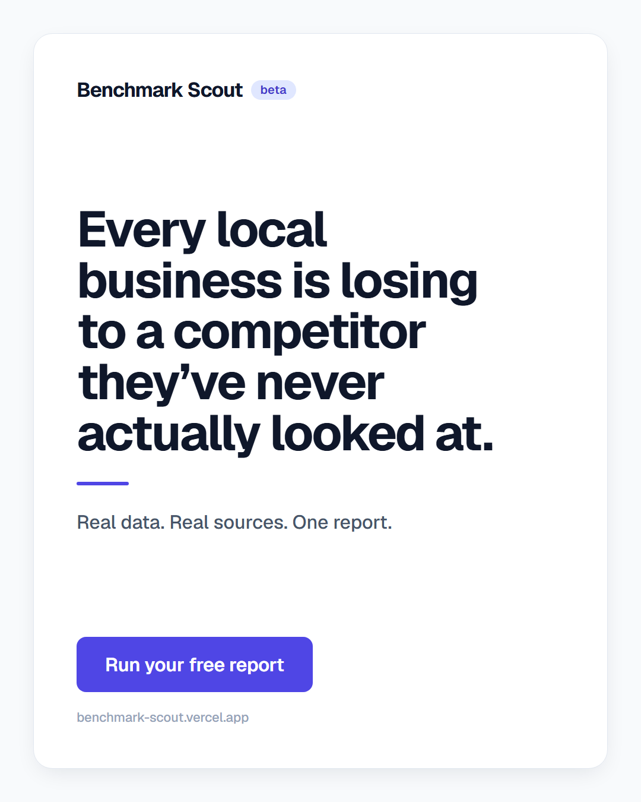
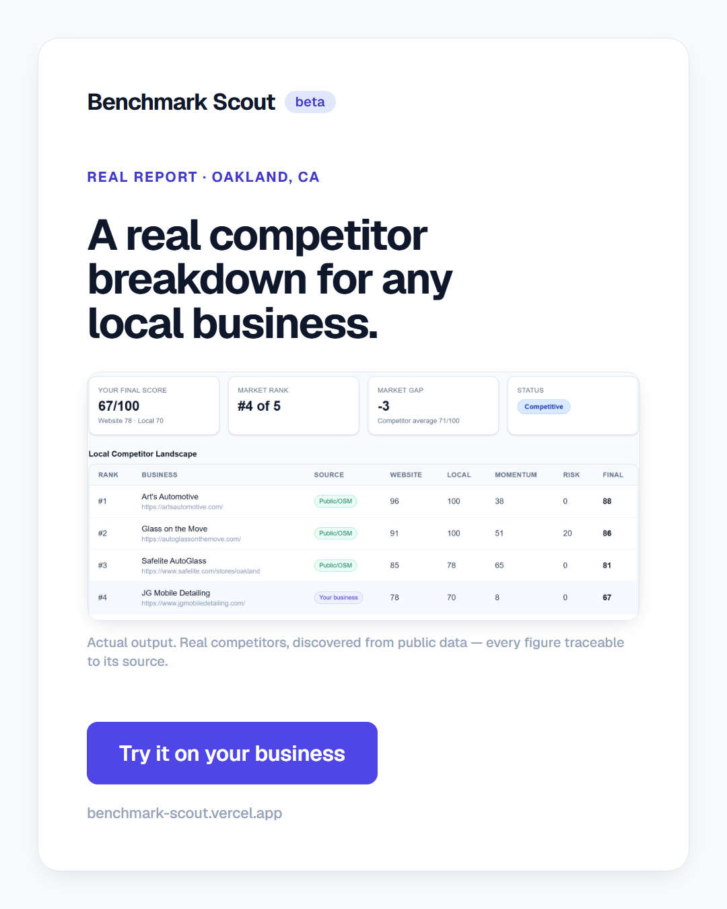
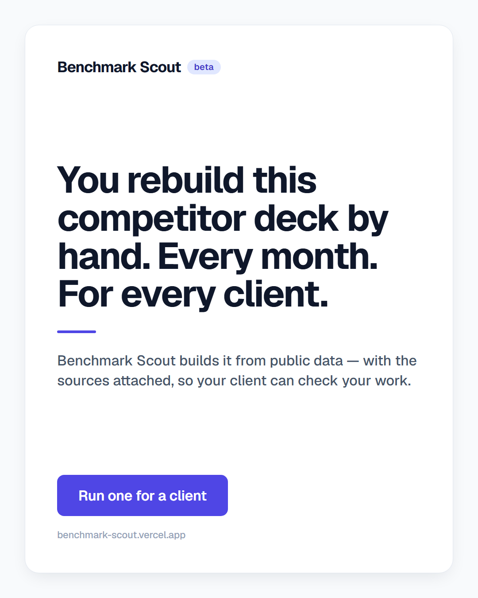
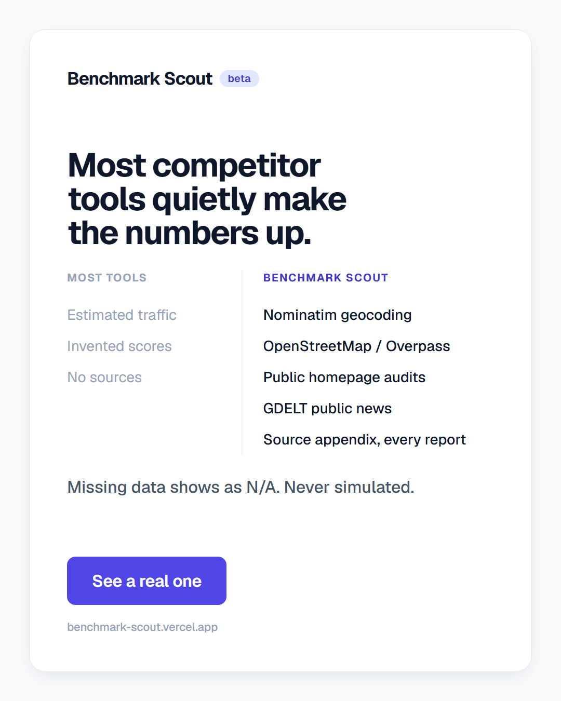
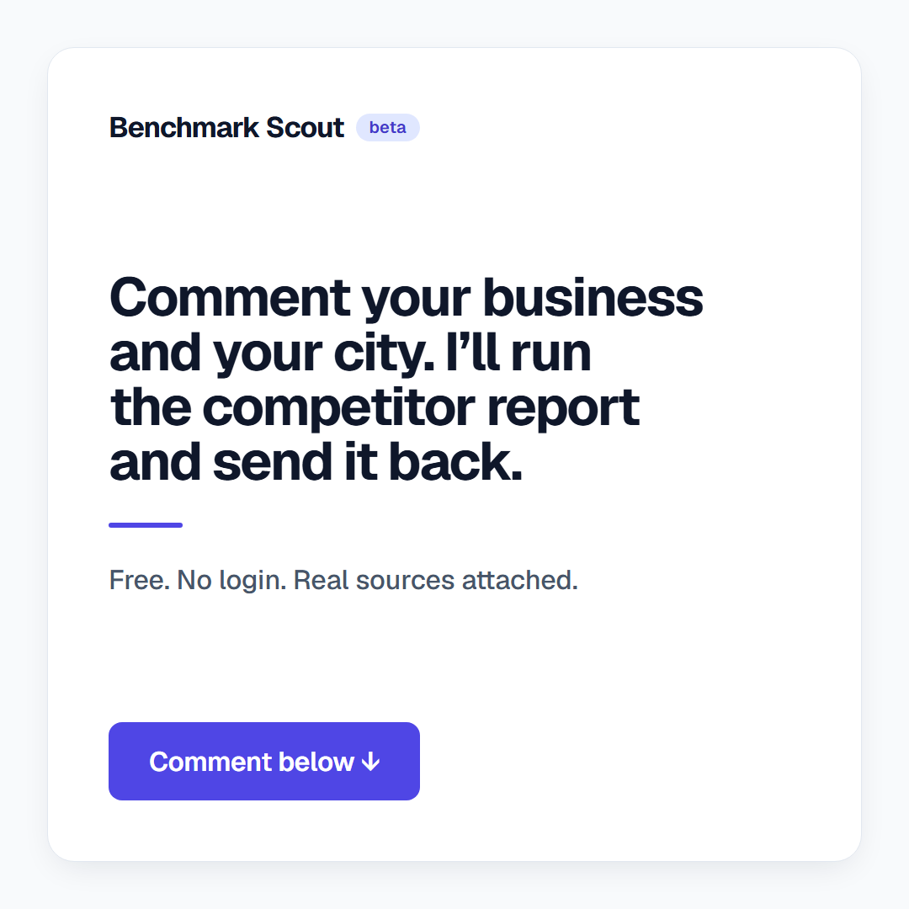
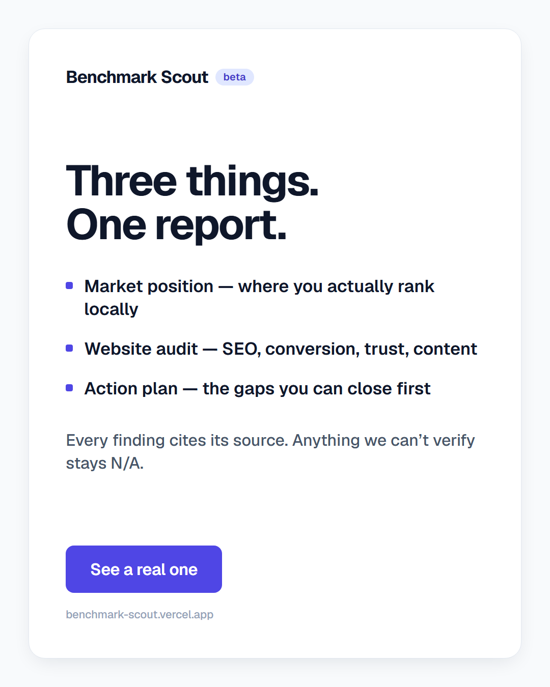
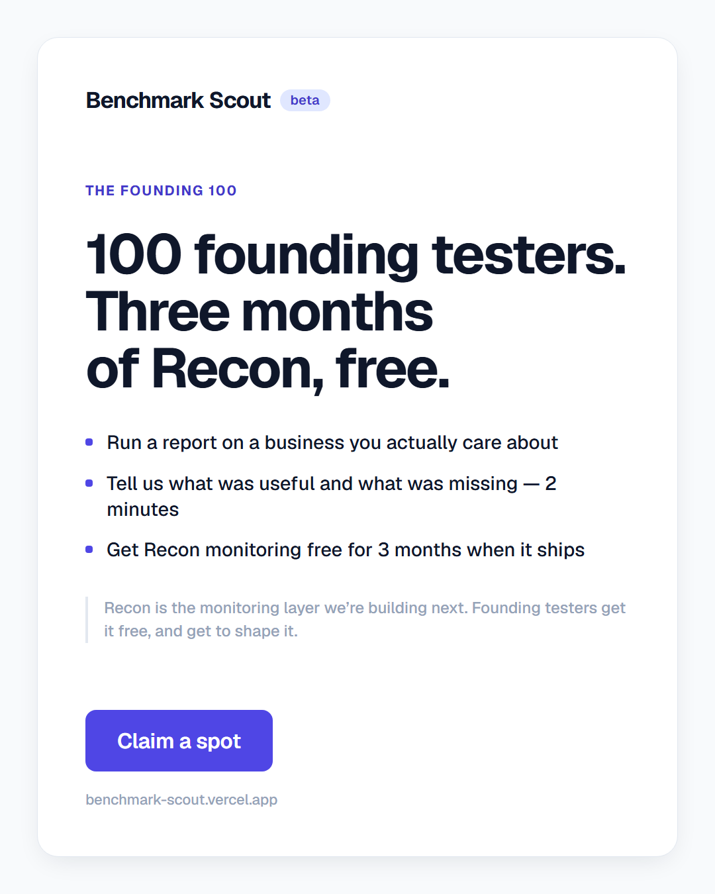
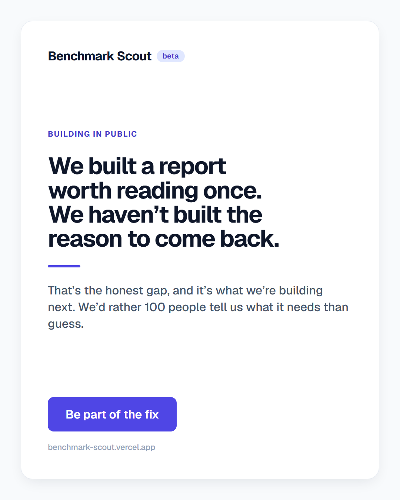
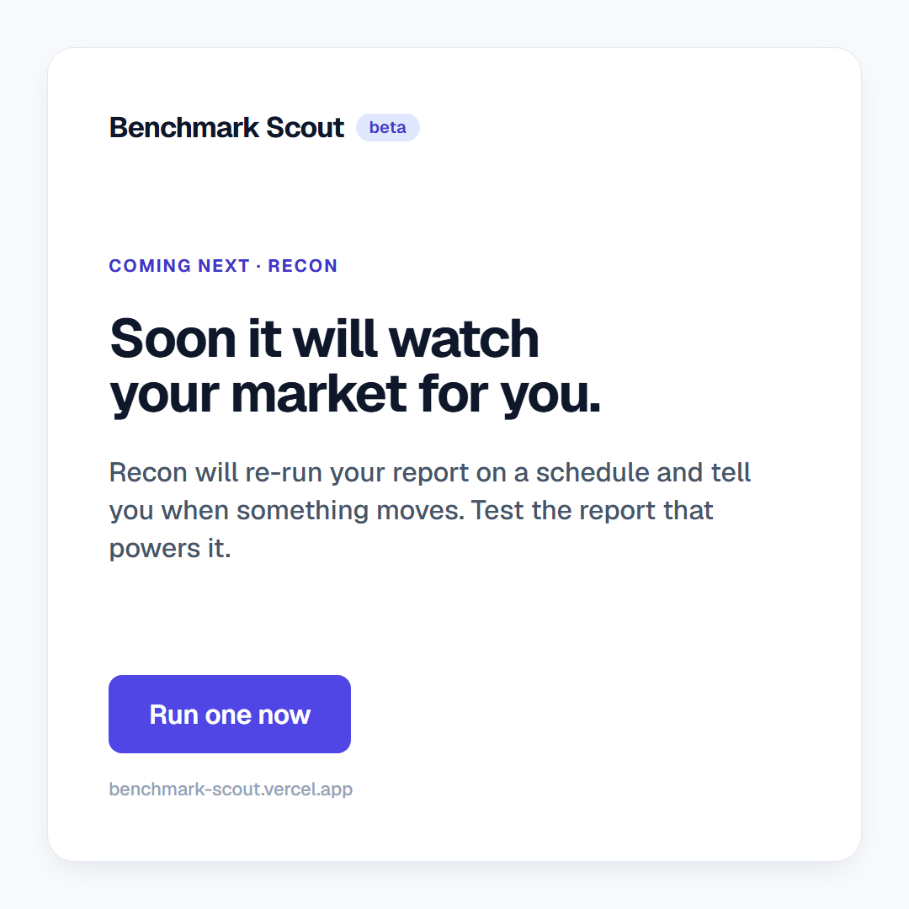
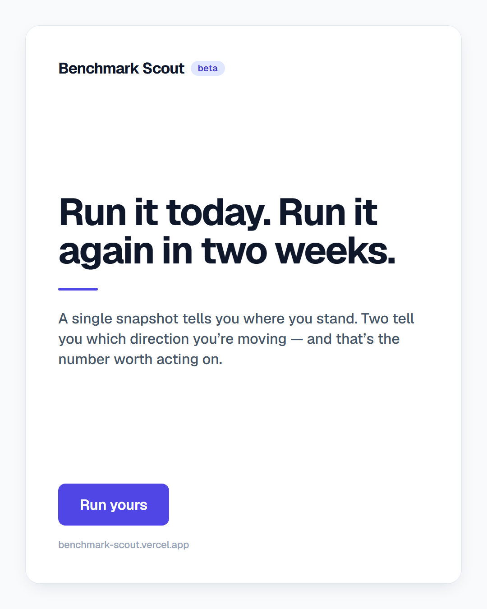

Rendered from card-dayNN.html by render.ps1. To change any card,
edit its HTML and re-run the script — the PNG regenerates at exact platform size.
Before posting: Day 12 and Day 14 contain highlighted NN placeholders for
numbers that can only be known at post time (spots remaining, markets scouted). Replace
them in the HTML and re-render. They are deliberately styled to look unfinished so an
unedited card cannot go out by accident.

Day 1 — Launch / thesisLI + X · CTA: Run your free report 1080×1350

Day 2 — Live demoX + IG · CTA: Try it on your business 1080×1350 · real report, /r/FQmMsIxR5Vc3

Day 3 — Problem-agitateLinkedIn · CTA: Run one for a client 1080×1350

Day 4 — Myth-bustX + IG · CTA: See a real one 1080×1350

Day 5 — Interactive lead-genX + LI · CTA: Comment below 1080×1080

Day 6 — What you getIG + FB · CTA: See a real onereplaced 1080×1350 · was a testimonial card

Day 7 — Founding 100 revealLI + X + IG · CTA: Claim a spot 1080×1350

Day 8 — Building in publicLI + X · CTA: Be part of the fixrevised 1080×1350 · NPS story removed

Day 9 — Feature tease (Recon)X + IG · CTA: Run one now 1080×1080

Day 10 — Watch it changeIG + LI · CTA: Run yours 1080×1350